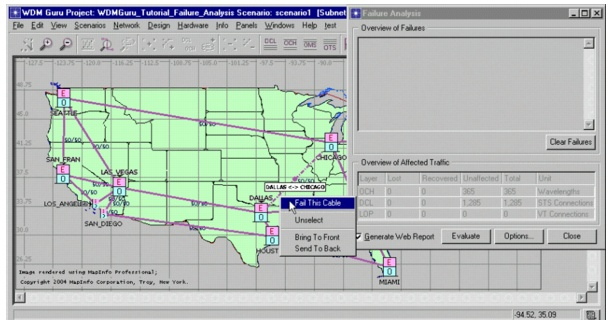
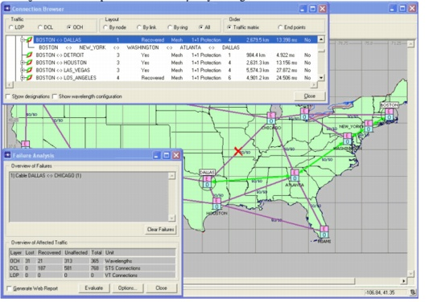
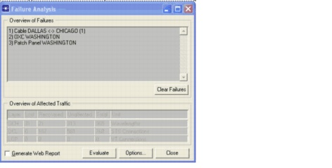
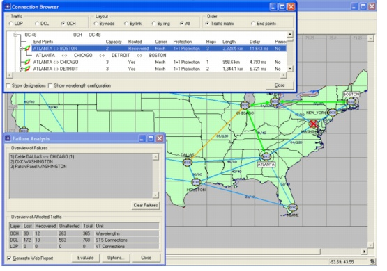
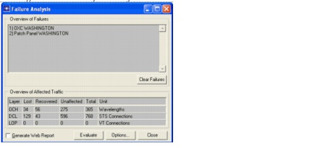
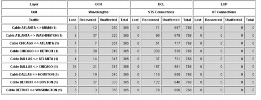
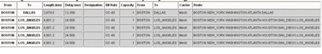

Network Evaluation > Failure Analysis
Network Evaluation
Failure Analysis
The Failure Analysis feature allows you to study the impact of equipment failures on the traffic routed in the network by specifying any sequence of equipment failures. SP Guru Transport Planner shows how the traffic reacts to these failures. Depending on the protection schemes applied, part of the traffic can be recovered and part of the traffic can be interrupted.
The following failures can be simulated:
Procedure 4-1 Performing Failure Analysis
- Open the WDMGuru_Tutorial_Failure_Analysis project.
- Select File > Open....
- Select the WDMGuru_Tutorial_Failure_Analysis project, then press Open.
The example project is loaded, containing the scenario scenario1.
- Inspect the routed traffic matrices.
- Select Design > Routing Results.
- Select the DCL layer and the traffic matrix STS-1. The selected traffic matrix has been accommodated in the network (using the ring sizing and grooming algorithm).
- Select OCH. The OC-48 traffic matrix deploys 1+1 protection. The OCH_STS-1-1_Grooming traffic matrix is the outcome of the grooming algorithm, applied to the part of the STS-1 matrix that is not accommodated on the rings.
- Close the Routing Results dialog box.
- Perform failure analysis.
- Select Info > Failure Analysis.
The Failure Analysis dialog box appears.
Closing the dialog box exits the failure analysis mode.
Note—When you are in failure analysis mode, no network design operations can be performed.
- Select the OTS layer view using the OTS button on the toolbar.
- Right-click on the link between Dallas and Chicago, then select Fail This Cable.
The cable fails (indicated by a red cross).
Note that the cable failure has been added to the Overview of Failures section of the Failure Analysis dialog box.

- Uncheck Generate Web Report and click Evaluate in the Failure Analysis dialog box.
The Overview of Affected Traffic section shows the impact of the cable failure on the traffic accommodated in the network.
In the OCH layer:
- Use the OCH button on the toolbar to view the OCH layer. The link between Dallas and Chicago is colored in orange, meaning that this link fails as a consequence of the cable failure in the OTS layer.
- Inspect the impact of the cable failure.
- Select Network > Connection Browser to inspect the impact of the failure on the traffic accommodated in the network.
Caution—Do not close the Failure Analysis dialog box. If you close the dialog box, you will exit the failure analysis mode.
- Select the OCH radio button under Traffic.
- Click on the + sign to inspect the connections of the OC-48 traffic matrix.
The connections are either unaffected (indicated as Yes in the Routed column) or rerouted using a backup path (indicated as Recovered).
Note that all connections affected by the cable failure can be recovered due to the 1+1 protection scheme deployed.
For example, check the connection between Boston and Dallas. The working path (Boston –> Detroit –> Chicago –> Dallas) is affected by the failing cable Dallas <-> Chicago. Therefore, the connection is recovered using its protecting path (Boston –> New York –> Washington –> Atlanta -> Dallas). This backup path is not affected by the failure. It is inherent to the 1+1 protection scheme that all connections affected by a single link failure can be recovered.
Note—The optical channels that were reported as failed in step 3.4 were not part of this OC-48 matrix, but were OCH connections that supported DCL traffic (from grooming) or DCL rings.

- Select DCL in the connection browser.
- Use the + icon to expand the STS-1 traffic matrix. Note that all its affected connections can be recovered using their back-up path.
- Close the connection browser (do not close the Failure Analysis dialog box).
- Continue failure analysis.
- Use the OCH button on the toolbar to view the OCH layer.
- Right-click on the node Washington, then select Fail This Node.
Both the OXC and the patch panel fail in this location.

- In the Failure Analysis dialog box, check Generate Web Report and then click Evaluate.
If the Generate Web Report option is selected, the web browser launches automatically and shows a failure analysis report. This report contains information about the affected and recovered traffic for the current network simulation.
In the OCH layer 102 traffic units are affected now, of which only 12 units are recoverable. Traffic is also disrupted in the DCL layer.
- Inspect the impact of the equipment failures.
- Select Network > Connection Browser to inspect the impact of the failures on the traffic accommodated in the network.
Caution—Do not close the Failure Analysis dialog box. If you close the dialog box, you will exit the failure analysis mode.
- Select OCH.
- Click on the + sign to inspect the connections of the OC-48 traffic matrix.
Some affected connections are not recovered (indicated by Lost in the Routed column). This is due to the two failures in the network. Note that a node failure results in losing all connections entering the network in that node, while transit connections could be recovered. So, each connection entering the network in Washington is lost, while the connection Atlanta <-> Boston, for example, is recovered.

- Select DCL in the connection browser. Inspect the STS-1 traffic matrix. Some of its connections are also lost.
- Close the connection browser (do not close the Failure Analysis dialog box).
- Repair the cable failure.
- Use the OTS button on the toolbar to view the OTS layer.
- Right-click on the failing cable between Dallas and Chicago, then select Repair This Cable.
This removes the cable failure. The red cross on the link is removed and the failure no longer appears in the Overview of Failures section in the Failure Analysis dialog box.
- In the Failure Analysis dialog box, uncheck Generate Web Report and click Evaluate.
In the OCH layer, 90 optical channels are affected, 34 optical channels are disrupted. Also, traffic is lost in the DCL layer.
- Compare this result with the result in step 3 of this procedure. The single node failure Washington has a more severe impact on the traffic accommodated in the network than the single cable failure Dallas <-> Chicago. Note that the 1+1 protection scheme cannot recover traffic towards a failing node.

- Close the Failure Analysis dialog box.
This clears all user-defined failures and ends the failure analysis.
- Generate a failure analysis report
- Go to Info > Export to Web Report > Failure Analysis Report....
The Generate Failure Analysis Report dialog box allows you to define the options to create a failure analysis web report.
Keep in mind that this web report shows information about different network scenarios, while the report generated during a failure analysis operation (see step 5.3) shows information about the current scenario only.
- Check Cables (Elements To Fail).
This means that only cable failures are simulated for the web report.
- Check Single (Element Failure Combination), implying only single (cable) failures are simulated.
- Press OK to generate the failure analysis report.
The web report is automatically opened.
- Select Overview in the Failure Analysis Report file.
This section gives an overview of the total, affected, recovered and lost traffic per layer and per failure scenario.

- Verify the cable failure Dallas <-> Chicago in the Overview traffic per failure scenario table. 52 of the 365 optical channels are affected by this cable failure, of which 21 channels can be recovered.
In the DCL layer, 187 of the 768 STS-1 units are affected, but all of them can be recovered. Note that these results are the same as obtained in step 3.
- Select Cable Dallas <-> Chicago at the left side of the report.
More details about the impact of this cable failure on the network traffic are displayed. Verify the traffic matrix OC-48. Note that all affected connections of this traffic matrix can be recovered. For example, the connection Boston <-> Dallas is recovered along the following path: BOSTON -> NEW_YORK -> WASHINGTON -> ATLANTA -> DALLAS. Verify that the same result was obtained in step 4.

- Close the Failure Analysis Report file.
- Close the Generate Failure Analysis Report dialog box.
- Close the project
End of Procedure 4-1
| Home © 1987-2007 OPNET Technologies, Inc. All Rights Reserved. This software may be covered by one or more U.S. Patents. See complete patent notice in the Legal Notices section. OPNET Support Center |